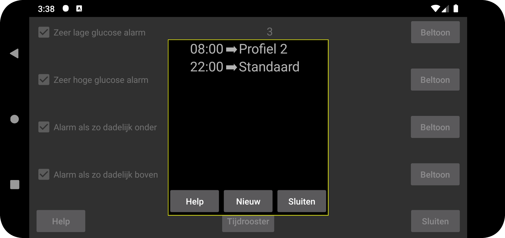
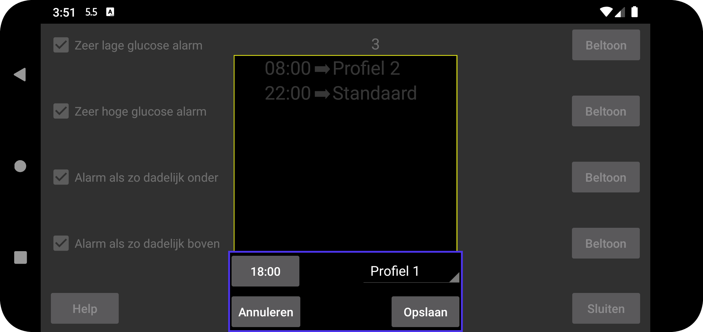

Stel in dat een bepaald profiel actief wordt op een bepaalde tijd van de dag. Druk op "Nieuw" om een koppeling te maken tussen een bepaald tijdstip en een profiel. Juggluco schakelt elke dag op het opgegeven tijdstip over naar dat profiel. Je kunt een tijdprofielkoppeling bewerken door erop te tikken.
Alle instellingen voor Alarmen en Praat zijn specifiek voor een gemeenschappelijk profiel. Welk profiel actief is, wordt weergegeven in het linkermenu → Instellingen → Alarmen en linker midden menu → Praat. Aanvankelijk is het profiel "Standaard". Je kunt dit veranderen in "Profiel 1" of "Profiel 2", enz. Alle specificaties in Alarm en Praat zijn specifiek voor het actieve profiel.
Sommige gebruikers schreven dat ze dachten dat je alleen de overstap naar een profiel kon plannen en niet beëindigen. Maar je kunt gewoon een extra item toevoegen dat de overstap naar het standaardprofiel plant, wat hetzelfde effect heeft als het toevoegen van een eindtijd.